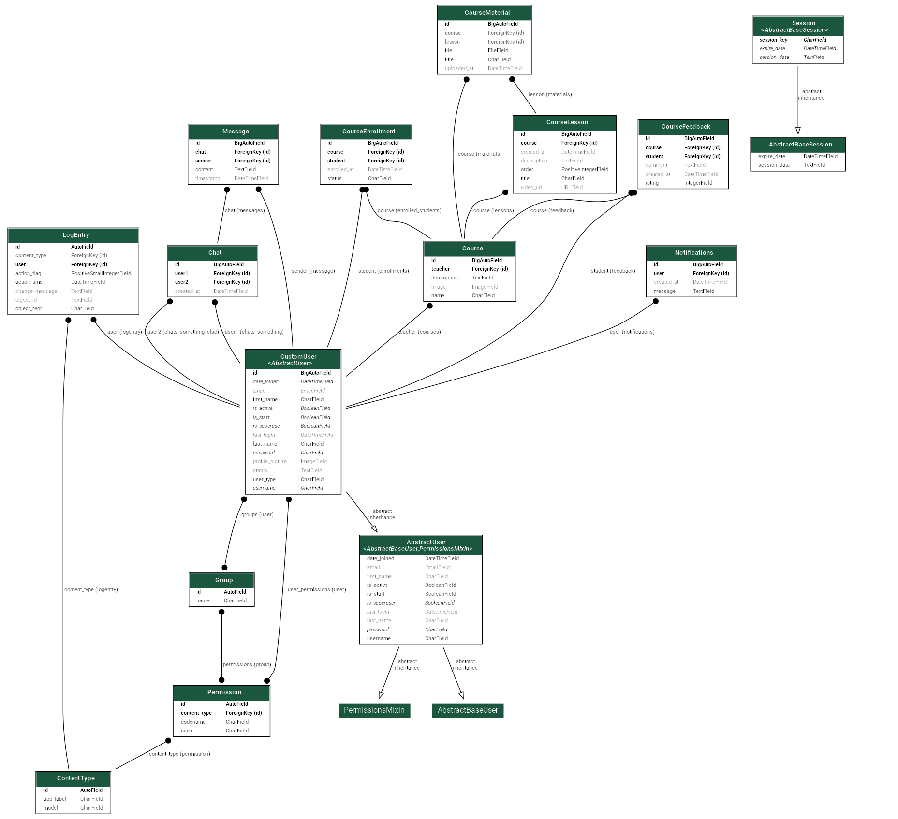

A full-stack e-learning platform built with Django and WebSockets, enabling teachers and students to interact in real time through chat, notifications, and structured course workflows. The system was designed with clear role-based access control, modular architecture, and production deployment in mind.
Many e-learning platforms provide structured course content but lack effective real-time interaction and fine-grained access control. Communication is often handled through external tools, leading to fragmented workflows and reduced engagement between teachers and students.
This project aimed to design and implement an integrated e-learning system that combines course management with real-time communication, while enforcing clear role-based permissions and ownership constraints across the platform.
The platform is implemented as a modular Django application composed of dedicated apps for users, courses, chat, notifications, shared utilities, and a REST API layer. This separation of concerns improves maintainability and allowed each subsystem to be developed, tested, and evolved independently.

Rather than relying on Django’s Groups framework, the system implements
a custom user model with a user_type attribute to
distinguish between students and teachers. This approach enables
efficient role checks, simpler queries, and explicit permission logic at
the view level.
Role-based and object-level permissions are enforced directly within views to ensure users can only access or modify resources they own or are authorised to interact with. This prevents common issues such as students modifying course content or teachers accessing unrelated data.
Real-time chat and notifications are implemented using Django Channels and WebSockets. Messages and notifications are persisted in the database, while WebSockets provide immediate delivery to connected clients.
The database schema was designed to satisfy BCNF, using join tables for many-to-many relationships such as enrollments. A constrained one-to-one chat model was selected to simplify message routing and ensure consistent performance.
The chat system supports private, one-to-one conversations between users. A unique constraint ensures that no duplicate chat sessions can exist between the same pair of users, while deterministic room naming ensures consistent WebSocket connections.
Notifications are delivered in real time and stored persistently, allowing users to retrieve, review, or delete them through the REST API.
The application is deployed on Render with PostgreSQL and Redis in production. Static assets are served using Whitenoise, while user-uploaded media is stored in Google Cloud Storage. Sensitive configuration values are managed via environment variables.